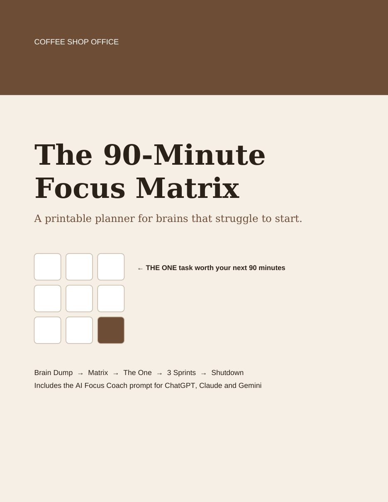
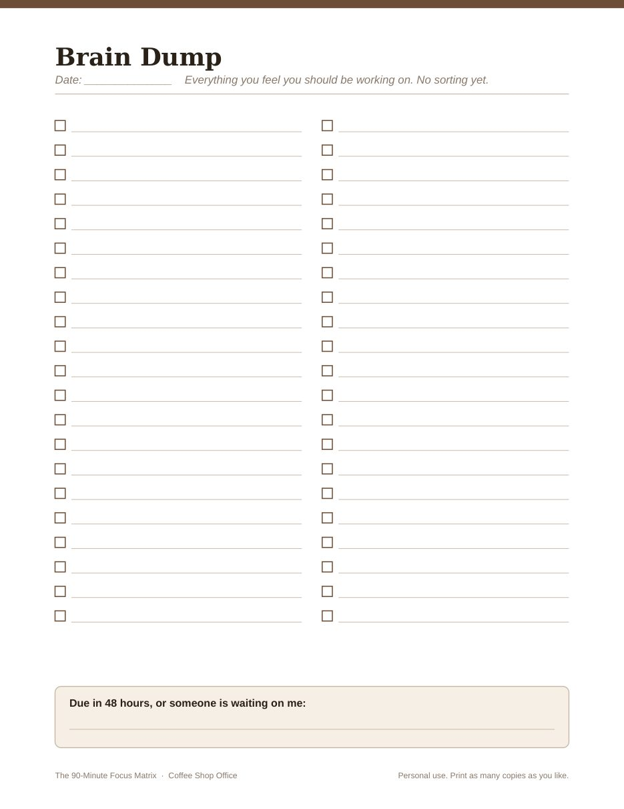
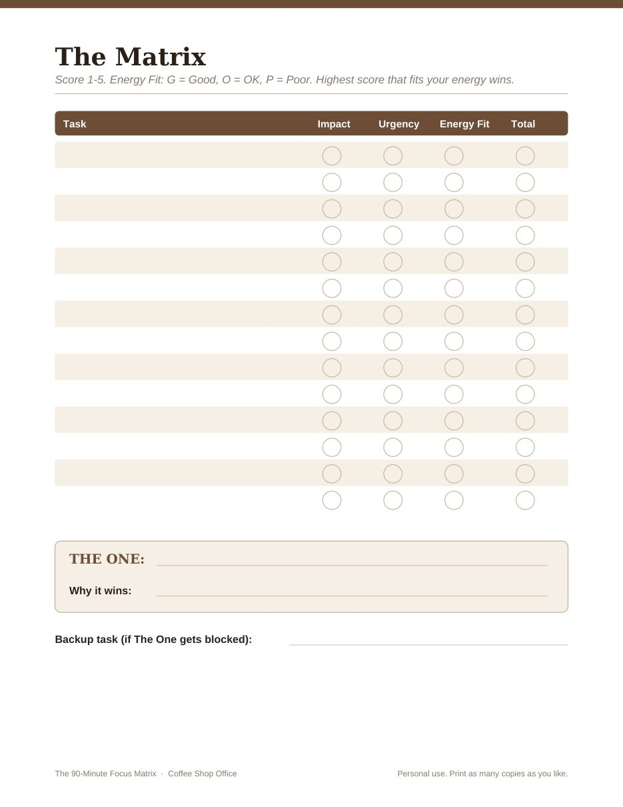
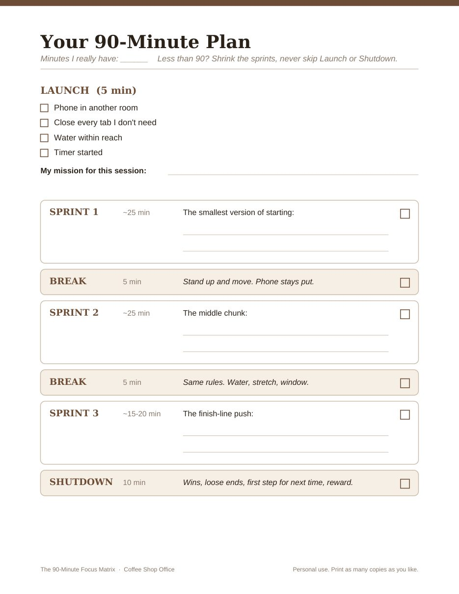

Printable planner + AI focus coach
The 90-Minute Focus Matrix turns a messy head into one clear task and a timed plan you can actually follow. Built for brains that struggle to start, get overwhelmed by long lists, or lose steam halfway.
Get it on Etsy for $9.99Instant PDF download. Print at home as often as you like.

A longer list won't fix that. You need a way to pick one task, a plan that fits the energy you really have today, and a fallback for the distractions you already know will show up.



Less than two fancy coffees, for a system you can run every workday.
Get the Focus MatrixSecure checkout on Etsy. Instant download.
It was designed with ADHD-style focus problems in mind: trouble starting, overwhelm from long lists, losing steam midway. Plenty of people without a diagnosis use it too. It's a planning tool, not medical advice or treatment.
No. The AI Focus Coach prompt works in the free versions of ChatGPT, Claude, and Gemini. The paper planner works fine without any AI at all.
Shrink the sprints. Keep the 5-minute launch and the shutdown, and cut the middle to fit. The AI coach does this math for you.
No. It's a digital download you get right after checkout. Print it at home or at any print shop.
Yes. Open the PDF in GoodNotes, Notability, or any PDF app that lets you write on pages.